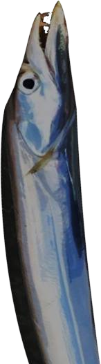

融和


「はあ……はあ……」
「エリ姉、大丈夫！？」
「う、うん……」
「エリ姉、大丈夫！？」
「う、うん……」
何とか新村家の前まで到着。
ここまでくれば大丈夫だろう――と言えないのが怖い。
ここまでくれば大丈夫だろう――と言えないのが怖い。
「夏菜ちゃん、カエルはどこに行ったの？」
「途中で目を覚ましたみたいで、逃げちゃった……」
「死んでなかったんだ」
「狩るだけなら殺す必要はないからね。 でも……」
夏菜ちゃんが来た道を見返す。
「途中で目を覚ましたみたいで、逃げちゃった……」
「死んでなかったんだ」
「狩るだけなら殺す必要はないからね。 でも……」
夏菜ちゃんが来た道を見返す。

「人の気配が全然なかったんだよね。誰かに狙われてるって感じじゃなかったし。
なつみちゃん、本当に予知能力あるんだよね？」
「うん、それは間違いないよ」
「変だなあ……」
「うん、それは間違いないよ」
「変だなあ……」
言われてみれば、ちょっとくらい危険な兆候があってもよかった気もする。
「エリ姉！ 誰か来るよ！」
さっと夏菜ちゃんが私の前に立ち、周囲の様子をうかがう。
見回すだけでなく、スンスンという呼吸音が聞こえる。
嗅覚も使って周囲を探っているようだ。
さっと夏菜ちゃんが私の前に立ち、周囲の様子をうかがう。
見回すだけでなく、スンスンという呼吸音が聞こえる。
嗅覚も使って周囲を探っているようだ。
「…………

なんだ、おばあちゃんか……」

「おーこれはこれは天才ハンター少女の……
って、そんな空気じゃなさそうだね」
夏菜ちゃんの目つきで、和やかな空気でないと気づいたらしい。
それなら、ご飯の時に気づいてくれたらよかったものを……。
夏菜ちゃんの目つきで、和やかな空気でないと気づいたらしい。
それなら、ご飯の時に気づいてくれたらよかったものを……。
いや、ちょっと待って！
古郡先輩の危険な予知って、おばあさんと遭遇することじゃないよね！？
古郡先輩の危険な予知って、おばあさんと遭遇することじゃないよね！？
……うん、多分それはない。
それなら、むしろ洞窟の方が安全なわけだし。
とりあえず、危険は回避できたのかな？
それなら、むしろ洞窟の方が安全なわけだし。
とりあえず、危険は回避できたのかな？
「ま、まあそんなに深刻なことでもないですよ！ 私たち、休み休みで狩りしてましたから！」
「そうそう！ エリ姉初めてなのにすごく上手だったよ！ やっぱり天才少女だね！」
「ほほう、それは楽しみだね」
「そうそう！ エリ姉初めてなのにすごく上手だったよ！ やっぱり天才少女だね！」
「ほほう、それは楽しみだね」
「おばあちゃんは何か狩れたの？」
「私はこれさ」
「私はこれさ」

おばあさんが持ち上げたのは、体長80センチはあろうかという太刀魚のような魚。
「すごい！ 立派なシニガミウオだね！」
「はっはっは！ この歳でもこれくらいは余裕さ！
「はっはっは！ この歳でもこれくらいは余裕さ！
そっちはどうだったんだい？」
「あ……えっと……」
「あのね、エリ姉が大ウシガエル捕まえたんだけど、私がドジって逃がしちゃった……」
「ほう！ 絵梨奈ちゃん、初めてなのにすごいじゃないか！」
「あ……えっと……」
「あのね、エリ姉が大ウシガエル捕まえたんだけど、私がドジって逃がしちゃった……」
「ほう！ 絵梨奈ちゃん、初めてなのにすごいじゃないか！」
「あの……えっと……」
カエルは私が捕まえたことにされ、加えて下の名前で呼ばれ露骨に狼狽してしまった。
カエルは私が捕まえたことにされ、加えて下の名前で呼ばれ露骨に狼狽してしまった。
「これで絵梨奈ちゃんも立派なハンターだ！
私たち、戦友だよ！」

「戦友戦友！」
ああ、夏菜ちゃんはおばあさんとの仲を取り持つために……。
だったら、それを無下にするわけにはいかない。
ああ、夏菜ちゃんはおばあさんとの仲を取り持つために……。
だったら、それを無下にするわけにはいかない。
「あ、あはははは！ 天才少女五島絵梨奈！ 本気を出せば狩りだってこんなもんです！」
私がニカッと笑いかけると、おばあさんも私のマネをしてニカッと笑い返す。
そして固い握手を交わす。
私がニカッと笑いかけると、おばあさんも私のマネをしてニカッと笑い返す。
そして固い握手を交わす。
「ようこそ荒田へ。絵梨奈ちゃんも、立派な戦士だね！」
「えへへ！ よろしく、エリカちゃん！」
妙な経緯ではあるが、私とおばあさんとの―― いや、エリカちゃんとの仲が深まった気がする。
「えへへ！ よろしく、エリカちゃん！」
妙な経緯ではあるが、私とおばあさんとの―― いや、エリカちゃんとの仲が深まった気がする。
多分エリカちゃんにとって、私が本当にカエルを捕まえたかは、どうでもいいのだろう。
それよりも、50歳以上も歳の離れた戦友を得られたことが、何よりの戦果だ。
これにて、狩りの勝負は終了！ 結果は引き分け！
作戦は、大成功です！
それよりも、50歳以上も歳の離れた戦友を得られたことが、何よりの戦果だ。
これにて、狩りの勝負は終了！ 結果は引き分け！
作戦は、大成功です！

台所から皿を洗う音が聞こえるが、居間には誰もいない。
「さて、私はちょっと用事があるから」
「エリカちゃん、どこ行くの？」
「ちょっと、茅萱とね。明日の法要の前日にやる儀式があるんだ」
「儀式……」
「本当は、元木町組3人にも見てもらう予定だったんだけどね……。 絵梨奈ちゃんだけでもどうだい？」
「エリカちゃん、どこ行くの？」
「ちょっと、茅萱とね。明日の法要の前日にやる儀式があるんだ」
「儀式……」
「本当は、元木町組3人にも見てもらう予定だったんだけどね……。 絵梨奈ちゃんだけでもどうだい？」
「うーん、とても興味はあるんですけど……。
私は古郡先輩を待ちたいですね。多分、重要な知らせを持ってくるはずですから。
今集落の外に行ってて、あの危険予知が働いたみたいなんです」
「なるほど、そりゃ儀式見学どころじゃないね。私も早く儀式を終わらせて戻るとしよう」
「なるほど、そりゃ儀式見学どころじゃないね。私も早く儀式を終わらせて戻るとしよう」
おばあさんは居間から出ていくと、台所からキュッと水道を締める音が聞こえた。
「あれ？ 戻ってたのか。
はあ、私も休憩だ！」

新村先輩はどかっと畳の上に座り込んだ。
私もそれに倣い、腰を下ろす。
私もそれに倣い、腰を下ろす。

「で、勝負とやらはどうだったんだ？」
「あー、色々あって引き分けでした！」
「引き分けか、まあ、それが1番平和だな！ そう言えばなつみから電話がかかってきたけど、五島の方にも来なかったか？ 五島にかけるように言っておいたんだけど」
「来ましたよ。すぐに逃げるように言われたんですけど、何も起こらなかったんですよね」
「あー、色々あって引き分けでした！」
「引き分けか、まあ、それが1番平和だな！ そう言えばなつみから電話がかかってきたけど、五島の方にも来なかったか？ 五島にかけるように言っておいたんだけど」
「来ましたよ。すぐに逃げるように言われたんですけど、何も起こらなかったんですよね」

「え？ なつみの直感が不発なんて珍しいな……」
「ですよねえ。だから帰ってきたらじっくり聞くつもりです」
と、夏菜ちゃんが私のスカートのすそを引っ張る。
「ですよねえ。だから帰ってきたらじっくり聞くつもりです」
と、夏菜ちゃんが私のスカートのすそを引っ張る。

「エリ姉……眠い……」
もう夜10時か。小学生にはちょっと遅い時間かな。
もう夜10時か。小学生にはちょっと遅い時間かな。
――と、玄関が開く音。
古郡先輩が帰って来たのか、エリカちゃんたちが儀式とやらに向かったのか。
いずれにしても、古郡先輩も間もなくこの居間に来るだろう。
古郡先輩が帰って来たのか、エリカちゃんたちが儀式とやらに向かったのか。
いずれにしても、古郡先輩も間もなくこの居間に来るだろう。
Read ✓ Next in this arc →